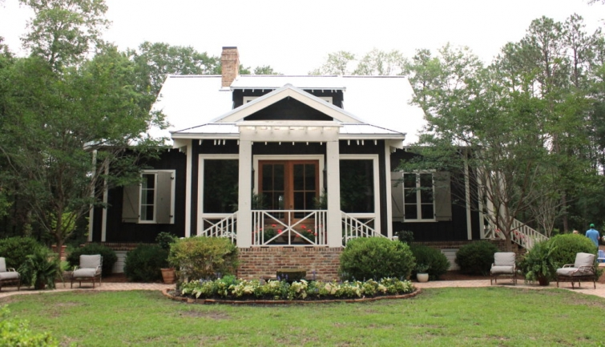
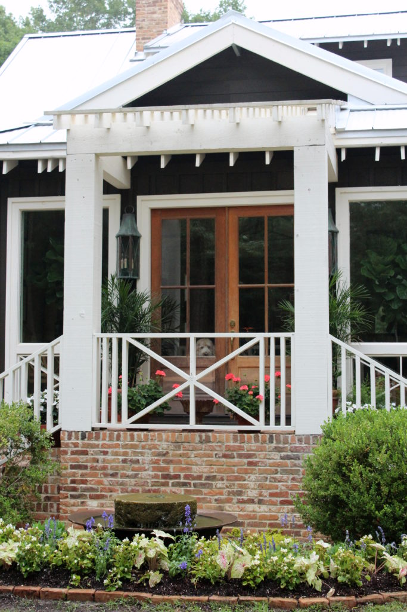
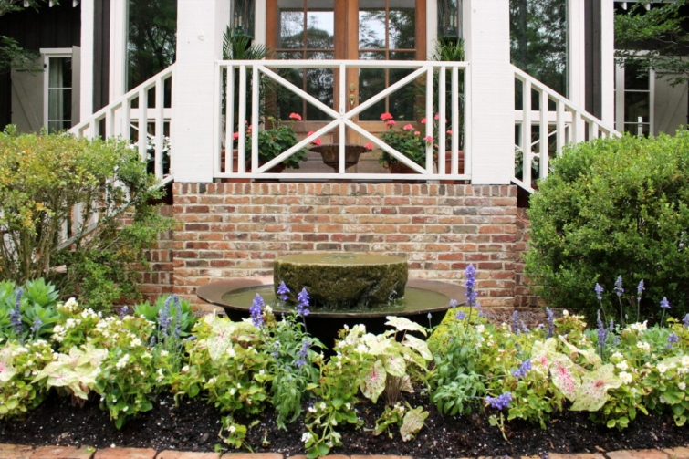

.png)
.PNG)
.PNG)
.PNG)
.PNG)
.PNG)
.JPG)
.JPG)
.PNG)
.PNG)


We interrupt this blogging break to bring you…a blog post! Last weekend my mother, a friend of hers, and I had the pleasure of going through a number of beautiful gardens that were part of a local church’s annual garden tour. (You can see the tour from 2 years ago here.) One school greenhouse and five homes were featured, but thunder began to rumble and rain began to fall as we were finishing up garden #4. So we headed home after that one.

I brought my handy-dandy “real” camera along with me so that I could get some pretty photos for you. I had planned to do this post at a later date, but it has rained and rained and rained here since then, and we can’t paint outside in this weather nor work on the flower beds. So you can thank Mother Nature for giving me some time to get this one written. 🙂

One of the gardens included on the tour belongs to local designer/decorator/author James Farmer. I wrote a post about James a few years ago (here) but that was before he had his home, Farmdale constructed. The house has been featured in a number of magazines, but I know many of you have not seen it yet. So today I want to show you around his garden.
 It was the first one we visited, and I believe we were the first ones there Saturday morning. 🙂 James was outside piddling with last minute things in the yard and signing books that were for sale on the ticket table. Farmdale is quite young. Construction..not the move in date mind you…the actual construction, started a mere 3 years ago, and with that in mind, I think he has accomplished a phenomenal amount for such a new space. (Especially considering his nonstop traveling schedule!)
It was the first one we visited, and I believe we were the first ones there Saturday morning. 🙂 James was outside piddling with last minute things in the yard and signing books that were for sale on the ticket table. Farmdale is quite young. Construction..not the move in date mind you…the actual construction, started a mere 3 years ago, and with that in mind, I think he has accomplished a phenomenal amount for such a new space. (Especially considering his nonstop traveling schedule!)
Let’s just walk around the outside starting with that side door behind them to the left.
(Farmdale’s resident dog, Sampson wandered from window to window watching everyone in the yard. 🙂 )

At the base of those stairs were more geraniums and… geese!
Every “farm” needs geese, right? 🙂 Another entrance was on that side with a vintage table full of garden pots.
Another entrance was on that side with a vintage table full of garden pots.

Take in the whole side here…

and then there is seating before you turn to go in the backyard.

You are going to love the backyard. 🙂

It really is amazing to think the parterre looks that good having been there for such a short time.

The boxwoods for the hedge were planted only a few weeks ago.


The old brickwork that you see in the walks and steps came from a church in nearby Macon, Georgia.


The other side of the house had ladders, air conditioning units, and tools all stored there…not exactly photogenic (but real life. 🙂 ) Let me take you back around to the beautiful front yard again…the part of the yard that was in the photos at the beginning of this post.

The area behind the front door looks like an enclosed porch, but it is actually the dining room.

There are crepe myrtles anchoring both sides of the house, providing symmetry to the landscape, and there is seating on each side as well.

And that’s just about all the photos from the garden at Farmdale. Didn’t you just love it? Now I could go ahead and finish this post with all the photos from the three other ones we toured, but I think it would be better if I include a few photos of the interior of Farmdale for those of you who have not seen it. And then I will do another post for you on the remaining gardens hopefully in a few days. Okay? Keep in mind, this was only a garden tour. We did not go inside the house (although James did do an interior tour during the fall a couple of years ago.)
Let’s start with the floorplan. Farmdale was built from a Southern Living plan that was tweaked for James by architect Robert Norris of Spitzmiller and Norris. I think they started from the Capeside Cottage plan. You can purchase the Farmdale building plans here from Southern Living.
The first floor is shown below, and there is a second floor in the plan. James has built the house with a few changes himself. The garage shown in the plan is actually an interior space (like the Capeside Cottage plan shows.) It is the white painted brick part of the house pictured in the side and backyard photographs. He also did a bay window behind the sink in the kitchen, and that is not shown in the plan either. There are probably other changes made, but those are two that I quickly noticed.
You enter Farmdale into a brick floored dining room.

Here is another view of the dining room in a photo by Emily Followill. You can really see the beautiful ceiling and that wonderful brick floor in this view.

Behind the dining room is the great room with its unique pecky cypress fireplace mantel and double barn look doors.

There is a staircase with Chippendale railing right off this room.

And the kitchen is on the other side of the great room.


There are two bedrooms in the downstairs space.
(This photo was obviously taken at Christmas.)


I love James’ use of old brick in the walkways and steps outside and on the wall and floor of this hallway.

And finally there is this fun relaxing space he calls the “waller room.”


I’m going to wrap up the post here, but there are still more photos of the interior over on Southern Living’s website if you wish to see them. I hope you have enjoyed “visiting” Farmdale today. We certainly enjoyed wandering through the grounds there last weekend! Anyone who is willing to open up their home/yard to a group of strangers should be commended for their generosity. We appreciated all the gardeners very much. 🙂
 I hope you will be back to see the rest of the gardens from the tour in the next post. Tomorrow is supposed to be a beautiful day here. So I know we will be working outside, but I will try to get that post out for you soon (and then I will be back “on blogging break.”)
I hope you will be back to see the rest of the gardens from the tour in the next post. Tomorrow is supposed to be a beautiful day here. So I know we will be working outside, but I will try to get that post out for you soon (and then I will be back “on blogging break.”)
Until next time…


.PNG)
Hi Kelly, so good to hear from you.
Don’t you just love garden tours!!!
My cousin goes every spring to Charleston garden tours, that is certainly on my bucket list.
Just wanted to say hey and hurry back.
What a nice surprise to find a post from you. This home and garden is just beautiful. Thank you for sharing! I hope your home is progressing as you planned. I Look forward to seeing what you have done when you start posting pictures of your hard work. 🏡
On a whim I checked your blog. So glad I did. Thanks for sharing. You know we all love your porch. I saw a pic of it yesterday on Instagram. It is darling as always. Hope you’re getting everything done that you want.
Great surprise to find yyou here. What a treat!
Good post but I miss your home. How is the pup? Update on your home improvement project?
Thank you and hurry back!
Hi Kelly ..how’s things? Hope all the work on your house is progressing well. I left a comment a couple if days ago but for some reason it hasn’t published. Fingers crossed this one does! Thanks for taking the time on a rainy day to share this with us all. It’s obvious from all the comments how people have enjoyed this surprise post!
I imagine you and your mum and her friend had a great day. The house is gorgeous…I especially like the staircase, so unique. I haven’t seen one like it before. Love the bedrooms too and the front door! Wonderful that you had the opportunity to look around.
Take care! As always great to hear from you.
Rosemary
So happy to see a post from you today. I went back a week ago and read your post before your break. Ohio has had rain way too often this spring. Lawn mowers can’t wait for dry, sunny days. At the end of a small bathroom update off our bedroom. It has taken way too long, but it will be worth it.
Hoping to add some feature to our deck this summer. Need to check Pinterest for ideas. Anxious to read and see what all you and your husband have completed at your house.
What a joy and a smile to see your post notice come up! And what a beautiful home. Loved it all. Thanks for the post, and I hope that your own home is benefiting from all your love and hard work!
mari
Thank you for posting this. How great to see things. I too have had “blog withdrawal” so was super excited to see your posting on Facebook.
Thank you so much for this posting! Enjoyed it so very much! Been missing your blog and it looks like a lot of your readers do as well, with all the comments left. Will read them all over the weekend. Hope you have time to take a little break and enjoy the 3 day holiday. Truly do look forward to seeing your Instagram pictures. It helps with ” Blog Withdrawal”! 🙂
Kelly,
I am so glad that you listened to the weather! It is so great to hear from you and to see the wonder garden tour pictures. I appreciate you sharing the tour with us. I always enjoy a good e-tour with you. I can’t wait to see what else you have for us to see. Good luck with your outdoor updating. Take care.
Dawn
Hooray! A post from Kelly! And such a beautiful tour you took us on. Thanks so much for sharing with us. Hope you and your family are doing well and your projects are coming along nicely!
Hi Kelly what a wonderful surprise to find your post in my email. You are sorely missed – completely understand that you are upgrading the house – but still missed. Lovely tour and as I am a gardener I love seeing other people’s beautiful spaces.Thank you.
Love seeing your post in my email. Thanks for sharing such a beautiful space. Will be watching for next post. Enjoy your time off.
What a lovely surprise to get your blog!!! I was surprised to find I really missed your posts, and was wondering when they would reappear. And what a great post it was. I have many of Farmer’s books, thanks to you, Kelly. They are wonderful, pretty , and informative. I was pleasantly surprised to see your blog about his new house. I loved the reclaimed brick idea. There is something comforting about potted geraniums and old brick. I loved the warmth of the house and gardens. I can’t wait to see the rest of it.
Seeing your post in my mailbox was a beam of sunshine in a difficult day! Thank you. I love love love garden tours, and was so delighted to enjoy this one through your photos. Good luck with your reno, and eagerly awaiting your next post!
Love, love!!!!! I know you did too, this house looks like your style. Now I have to figure out what I need to change to get this look. A new house maybe, in the South!!
What wonderful post of eye candy! I can never get enough of James Farmer or his home, Farmdale. The brick walks and the brick used inside and outside this house are just beautiful! My holiday company have been here and gone so I plan to enjoy this post with a Saturday morning cup of coffee to soak up all the little details. Loved seeing you in my mailbox!
It was a lovely surprise to see a post from you! Love this house and garden. Was this house the inspiration for the dark paint when you were picking out paint for your home? I love the way it looks,but also love the color you have (and kept)on your house. Really like the use of brick inside and out. 35 years ago I laid the brick walkway at our house…it was a lot of sweaty,hard work. I used decomposed granite as my base instead of cement. My husband was not sure it would last, but it still looks good. If I ever built another house (I won’t) I would put brick inside, either in the entry or dinning room. Thanks for a fun post, don’t work to hard!
Kelly
I sure miss your regular posts, but completely understand the why’s of it. 🙂 You were the reason I fell in love with James T. Farmer’s style. His new home is lovely inside and out. I will check out the Southern Living pics. I can never have too many pictures of his welcoming and warm style of decor.
xo,
Karen
Hey Kelly! So nice to see that you’re back, if only for a post or two for now! Hope things are going well on your home project. Thanks for the beautiful post. I’ll be looking forward to the next one!
What a pleasant surprise Kelly! I miss you. Julia in Cincy
Happy surprise to see a posting, Kelly. Miss you. Thanks for the beautiful home and garden tour.
Hi Kelly, What a treat! Thank you so much for sharing. How did you hear about the tour? I’m local and didn’t know anything about it until I saw your IG story (too late to partake 🙁). I would have loved it! The annual tour of gardens was one of my favorite events to do up in Marietta, GA before we moved down here. There is always so much “eye candy”, and the tours are great resource for fresh gardening ideas.
———————————————————————–
Hi Kitty! The garden tour was called Boxwoods and Blooms, and it is an annual tour hosted by the Centerville United Methodist Church. It is usually held around Mother’s Day each year. I just checked the church’s facebook page starting in April to find out about it. I would have thought that James Farmer’s page would have had info about it, but they never did. Anyway, write it on your list of things to do in the new year to begin checking Centerville UMC facebook page around Easter, and you won’t miss out on the garden tour. 🙂
Kelly
Glad you stopped in during the rainy weather! I’m sure the rains there have frustrated your plans – and the gardeners too. I love Farmers’ Ferndale house. It seems so homey and curated over time, I’m sure he worked hard to achieve just that effect!
Can’t wait to see the others, and also your finished home projects. But I have patience, don’t rush! 😉
Well, looks like all this rain was good for something. I was happy to see your post today. 🙂 He has done a wonderful job on his gardens considering how new they are. They’re so inviting and beautiful. I love the exterior of his home too, especially the use of the old brick. I love all the terra cotta pots. I used to have several, but they dry out so quickly I tired of watering. 😛 Looking forward to the rest of the tour. 😉
So glad you popped back in to do a post. I am looking forward to James Farmer’s book and I loved the garden tour. I am sorry you got rained out but certainly glad to see you post again!!
First of all, Tra-la-la, it’s a happy day because I KNEW you’d post something soon and not leave us hanging on all of your charming adventures! Second of all, Yes! I love this house and garden. Thank you so much for remembering us! Happy drier summer days to you!
And YOU are so generous to share your Summer activities with us. Thanks for the eye candy.
Happiness is seeing *Talk of the House* pop up in my email!! And thanks for the lovely garden tour of James Farmer’s home. You introduced me to his work a few years ago. Although we have a totally different landscape here in Southern California, I love seeing all the old brickwork and plantings that thrive in your part of the country. ~Ann
Hi, Kelly! This was a special treat. We have definitely missed you but understand house revitalization. My husband and I have been doing the same as you. It makes me feel better when everything gets a fresh coat of paint. Thank you for the tour. I love almost everything James Farmer. I can only imagine how gorgeous Farmdale will be as it evolves over time. It is already beautiful. The brick inside and out is perfect. And the Waller Room! LOL! Love the color palette. I think I have more than one Waller room…I would settle for one of mine looking like his. Thanks for letting me dream!
Thanks for the quick blogging break. You have been missed. Can’t wait to see all the pictures of the changes you’re making to your home.
Hi Kelly! I’m so happy to see your blog! It is an especially good one, too. I love James Farmer. I think I first read about him on your blog. His home is gorgeous! Thanks for sharing. It is really good to hear from you. xoxo, Anne
You made my day! Oh how you have been missed 😃
Your wonderful surprise post made my day! So glad you got a break from painting, and thrilled that you used some of your time off to share that inspiring tour with us. I LOVE James Farmer’s style, so this post would’ve been a particular pleasure under any circumstances. As an unexpected treat, it was all the more of one. Many thanks for the day-brightener! Am looking forward to seeing the other gardens!
Oh! What a happy surprise to see a blog post from you! I miss your decorating inspiration! This is a beautiful home you are featuring today. Thank you and I hope we hear from you real soon before the Fall. Take care, Kelly !
Hugs,
Barbara from Parrish, FL
What a refreshing thing to find a post from you. I’m on my second cup of coffee and here you are with a lovely garden blog. I’m in northwest Arkansas and we have had rain and very cool temps for the past couple of weeks. And did I mention rain? 14 inches in the past 2 weeks or so.
So thank you for taking the time to blog. I’ve really missed your missives.
I hope you get to finish your projects this summer and come back to visit with all of us who so look forward to hearing from you.
Blessings on you and yours.
Thank you, Mother Nature, for giving Kelly a break and us time to say hello. Blessings!
Oh how I’ve missed you!!!
Love the surprise post-his gardens are glorious. Especially when you consider how young they are.
His use of reclaimed bricks in his home make me drool…My husband wants to sell a bunch he has reclaimed from a job he is doing…I think I’m going to nix that idea and save them for our now home build after seeing this post!
Thank you for the nice surprise of a post. I look forward to the follow up before you go back to all your projects.
Cheers,
So glad you got to take a break, not only to go on the garden tour with your mother, but to share some of that with us because of the rain. I love the use of brick, both inside and out, at Farmdale. And, the cuteness of seeing Sampson eagerly watching people in his territory from the windows is precious! Thank you for your time to share this, Kelly.
Sampson-Adorable! House-Beautiful! Grounds-Gorgeous! Homeowner-So Brave! Thank you for sharing this beautiful home. Must tell you I live in the north and my favorite home in the city I live is a Southern Living home. It is only a few miles from where I live and one day I stopped when homeowners were out and told them that their home is my all time favorite. They invited me in, right there on the spot, most lovely couple, and gave me a tour of the entire home. It was as pretty inside as out! The model is called the Rosewalk Cottage and if I ever build another home that would be the house plan I use. Great pics Kelly! Thanks again for taking the time to post for us.
What a nice surprise to see your blog post in my email. Lovely tour…garden tours are my favorite. And his home…wonderful. Love his style. Looking forward to another post….but I know you must get ‘back to work’! 😉
What a happy surprise!!! I have really missed you! (I was a little bit afraid you wouldn’t come back. Now I know you will.) I especially loved this post because I have been working on refreshing our yard for our son’s upcoming rehearsal dinner here.(This is actually the best time for me for your blogging break because everyday I “hit the floor running” as my daddy says.) I love the flowers in pots on the steps and that they have those newly planted boxwoods. We have been removing bushes and replanting…I like when bushes have been there a while but sometimes you have to start over. I just wish I knew more about gardening. (Most of what I know I learned from DiAnne.) I just love the old bricks the Farmers used in their home and garden. I also love all of the container gardens. What a beautiful, peaceful place they have! And, you are right…it was so nice of them to welcome strangers. Thanks for more motivation, Kelly!
I simply love his home and gardens. I am always searching the Internet for more pictures. Thanks for sharing. I love the brick floor and dining room. I had a brick floor in my kitchen in our previous home. It was one of my favorite things.
I hope you are getting lots done around the house. I know it is just plain work keeping up a home. I have been in repair mode around here as well.
THAT HOUSE! How do I love thee? Too many reasons to list, but that “X” motif on the porch is especially epic! I am inspired to do that on our (almost finished) porch! Thanks for the help, + welcome back!
Kelly, how lovely to hear from you! And now you’ve got me fantasizing about winning the lottery and building my own home… I am particularly taken with the old brick walkways and the parterre from this one. My husband and I have already agreed that we would like a parterre-style outdoor eating area for our next house (whenever that may be!!) so ours would have a circular table with chairs instead of the planter in the centrepoint of the raised beds. I’m also rather taken with all the seating areas – our weather is good at the moment, so I’m taking the opportunity to get outside and enjoy it too. 🙂